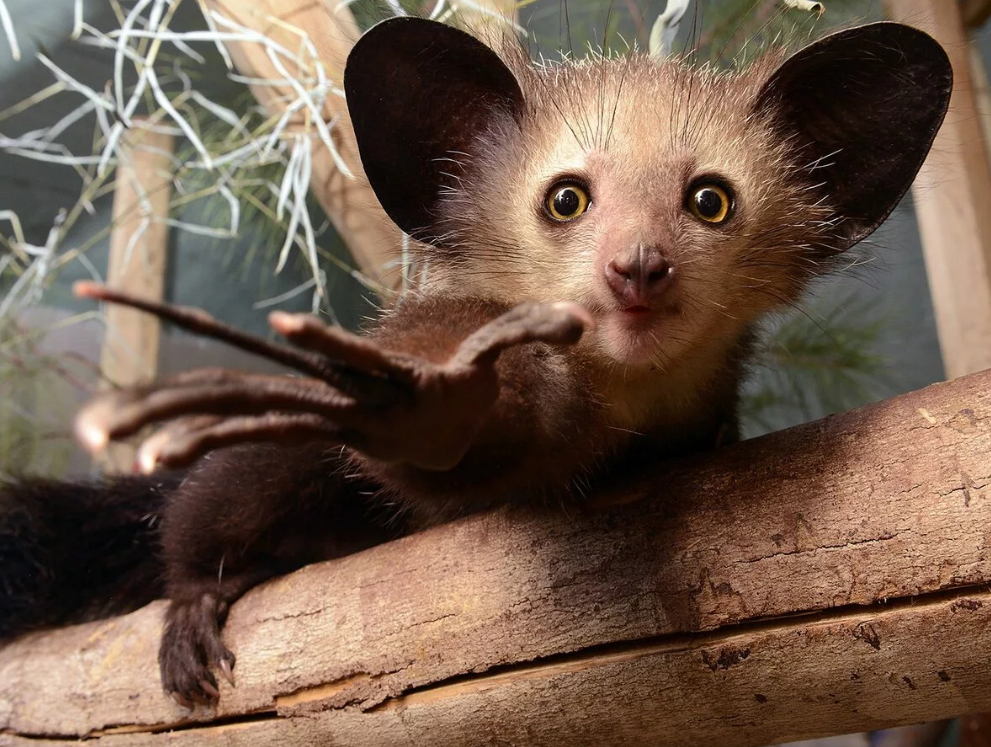

Лемур Сунда
Летающие лемуры относятся к виду шестокрылов. Это небольшие, скрытные животные, ведущие ночной образ жизни. Такое название зверек получит за наличие складчатой мембраны, позволяющей лемуру планировать между деревьев на расстояние до 100 м почти без потери высоты. Шестокрылы умеют хорошо маскироваться и сливаться с корой деревьев. Их не легко заметить в листве. Летающие лемуры очень шустро передвигаются по стволу дерева и крайне редко спускаются на землю. В поисках пищи лемур способен за ночь преодолеть расстояние до 1,5 км. Вес зондского лемура не превышает 2 кг, длина тела чуть больше 40 см, хвоста 10 - 27 см.
Мадагаскарская руконожка
Очень необычный и редкий ночной зверек живет на севере Мадагаскара. Это руконожка или лемур ай-ай. Местные жители связывают с этим животным множество суеверий. Они даже боятся произносить названия зверька на родном языке. В действительности руконожка довольно милый и безобидный представитель рода лемуров. Вес взрослой руконожки около 3 кг, длина тела достигает 44 см. главное украшение зверька – пушистый хвост длиной до 60 см.
Аксолотль
Аксолотли – редкое животное родом из Мексики, обитающее в пресноводной воде с температурой не выше 20 градусов Цельсия. Местные жители называют аксолотля водяной собакой или драконом и считают его божеством. Животное, по сути, является личинкой амбистомы. Потомки мексиканской и тигровой амбистом страдают неотенией из-за недостатка гормона тиреоидина, поэтому они никогда не взрослеют. При этом они достигают половой зрелости и способны приносить потомство.